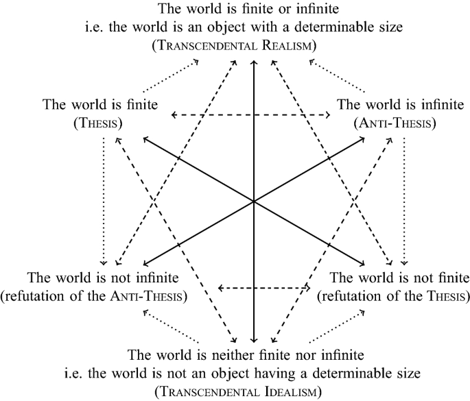

Antinomies are discomforting things. If you haven't run into them before, they were a topic of debate and discussion introduced into modern philosophy by Kant (Unless he had some forebear of which I'm unaware), though you might say that they bear some resemblance to Zeno's paradoxes, or that Zeno's paradoxes are perhaps the product of the antinomies.Here's Wikipedia's explanation of Kant's First Antinomy:
in the First Antinomy, Kant proves the thesis that time must have a beginning by showing that if time had no beginning, then an infinity would have elapsed up until the present moment. This is a manifest contradiction because infinity cannot, by definition, be completed by "successive synthesis" -- yet just such a finalizing synthesis would be required by the view that time is infinite; so the thesis is proven. Then he proves the antithesis, that time has no beginning, by showing that if time had a beginning, then there must have been "empty time" out of which time arose. This is incoherent (for Kant) for the following reason. Since, necessarily, no time elapses in this pretemporal void, then there could be no alteration, and therefore nothing (including time) would ever come to be: so the antithesis is proven. Reason makes equal claim to each proof, since they are both correct, so the question of the limits of time must be regarded as meaningless.
I suspect my own approach is a dumbing down of Kant's loftier and more metaphysical intentions, but I think of the antinomies as illustrating the limits of reason. We always think that if we can only nut something out properly we'll get the answer. Well the antinomies suggest that there are limitations to that - that you may begin with perfectly good concepts, or concepts that are helpful in one domain and end up tangled in paradoxes. Hegel regarded them as an example of the way in which too much wit outwits itself.
And disciplines other than philosophy have pursued their own logic, helpful as it may be in in making practical disciplinary progress all the way to a point where they end in paradoxes. Here are two examples.
The search for logical foundations of mathematics ended in tears, or at least in paradoxes, like Russell's paradox. The set of all sets that are not members of themselves both contains itself and doesn't contain itself. Later Gödel's second incompleteness theorem demonstrated that "For any formal effectively generated theory T including basic arithmetical truths and also certain truths about formal provability, T includes a statement of its own consistency if and only if T is inconsistent." (Wikipedia)
Economics too has its antinomies, though in a far more prosaic way than those above. Perfect competition is probably the best example. Perfect competition is a mathematical construct which takes to its logical conclusion the tendencies that competition produces in the market - leading to price equalling marginal cost. But the thing that we end up with is a place where there is no incentive to compete!. For the market price is given - so one produces as much as one wants to and then no more. One gains nothing by taking someone else's market. Firms may as well co-operate as compete, but there's no incentive for them to co-operate either as each producer is at the technology frontier, so they have nothing to offer each other. And being at the technology frontier they have no incentive to innovate, and if there was a need to innovate, their production would generate no surplus with which to invest to innovate. For this reason, perfect competition also fails to do one of the most central things that competition does in the real world, which is to motivate search - the search for better ways of doing things.
There are plenty of other antinomies in the world . . . .
Very good. I guess Einstein provided an answer to Kant at least.
Funny to see a connection between physics ( the idea of time , space and matter) and economics. As Pedro writes while quantum mechanics has provided an explanation of Kant's problems the related principles - Heisenbergs, Pauli's etc all end in mind numbing explanations. Paired subatomic particles with spin characteristics that mirror image each other must instantaneously interact with each other if one of their spins changes across any distance ie faster than the speed of light in vacuum.How? There is no explanation I am aware of but there was an experiment which observed this phenomenon in 1997. Reading pages of notes of physics I'm constantly seeing symbols and formulae which look just like economics being explained.i bet there isn't an explanation for that either!
Descartes' Meditations are a study of antinomies or the limits of reason. Of course, Descartes concluded that a God vouchsafed "clear and distinct" ideas, which Descartes defined rather arbitrarily, as definitely true. And, of course, all that God talk wasn't at all robust, which put paid to Descartes' Meditations.
Hume thought much the same, but without God involved, he had nowhere to go other than a more pragmatic approach to knowledge: i.e. reason without limit is self-defeating, and pure empiricism precludes ideas such as causality and the substantial self, which makes talking about the world exceptionally difficult, so we more or less have to be careful about how we employ both sides of any knowledge claim.
Then there's glorious Kant and transcendental idealism, which limits the extent of our knowledge claims. Kant had basically gotten to Godel's conclusion via philosophical means rather than mathematical.
Anyway, I wrote an honours thesis on the limits of reason. It's here:
It's here: http://anagrammatically.com/2009/04/16/the-thesis-scepticism-and-unattainable-certainty-transcendental-idealism-and-humanised-epistemology/
Thanks Antonios.
I like your intro - and this passage:
I can't begin to express the enjoyment I derived from this thread, a week after watching the last episode of Stephen Hawking's take on creation on tel. This question has had me snookered since I came across the Parmenidians and Heraclitans of classic Greece and then the debates two thousand years later involving the likes of Galileo, Descartes, Spinoza and later between Liebniz and Newton's proxies.
One of my favourite Kant passages expresses the idea that so often comes up in Wittgenstein and has been popularised by Gladwell's Blink, the idea that judgement requires practice. Here's the quote:
As far as I'm aware, although philosophers have often spoken about wisdom, no previous philosopher spoke about this very important distinction between rational knowledge and judgement so directly. At its worst, the philosophical tradition, starting from Plato, pretty much argues that reason is wisdom.
Hi Antonios
I just read this bit above again. I’ve since discovered that this was Michael Polanyi's jumping off point!